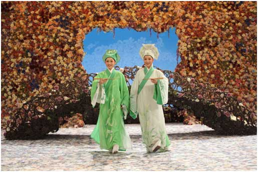
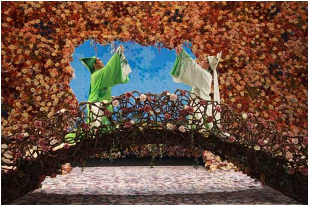
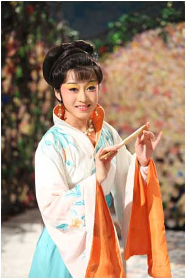
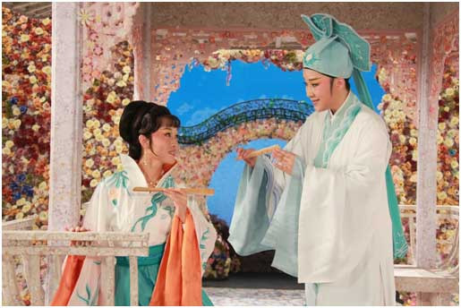
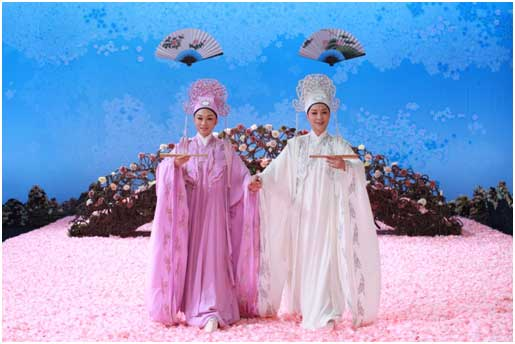

剧情简介
故事发生在中国古代。
女扮男装的祝英台出门求学。途中，遇书生梁山伯，两人意趣投合，相谈甚欢，遂在草桥上以蝶为证，义结金兰。
同窗三年，兄长梁山伯对“贤弟”祝英台处处呵护有加，而祝英台则对兄长的人品、学识充满仰慕，一首“执子之手，与子偕老”更激起她对梁山伯的爱恋，然梁山伯却不知祝英台本是妙龄女子。
家中来信，催祝英台速归。祝英台与梁山伯一路相送，依依惜别。分手之际，祝英台假小九妹之名为梁山伯说媒，并再三叮嘱他定要早来提亲。
书院师母将祝英台所托信物转交梁山伯，梁山伯恍然大悟，兴匆匆赶往祝府求婚。但此时的祝英台早已遵从父命与马家定亲。
刻骨相思的一对恋人楼台重逢，竟成永诀……
